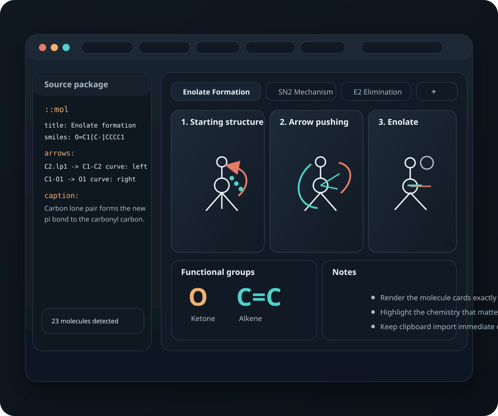

Rendered cards
Molecule cards show titles, captions, lone pairs, charges, and atom labels.
Desktop-first chemistry cards
ChemRender takes the molecule-card format used by LLMs and turns it into a clean, inspectable workspace for lone pairs, charges, arrows, stereochemistry, and functional-group highlighting.

A focused renderer for study notes, mechanism walkthroughs, and LLM-generated chemistry output.
Features
Molecule cards show titles, captions, lone pairs, charges, and atom labels.
Curved arrows resolve against atoms, bonds, and lone-pair anchors.
Expanded views identify and highlight groups like alkenes, ketones, and aromatics.
SMILES stereochemistry and ring geometry render cleanly for cis/trans and chiral examples.
Install the macOS app for direct clipboard import from the keyboard with no paste prompt.
Keybind presets, editable shortcuts, tab management, export settings, and a built-in tutorial.
Workflow
Ask for `::mol` blocks with SMILES, lone pairs, charges, and captions.
Open the package in the app, or use the desktop clipboard flow for immediate import.
Inspect rendered cards, warnings, arrows, and functional groups without editing atoms by hand.
Move cards back to notes or export SVG/PNG versions when you need them elsewhere.
Format
::mol
title: Starting structure
smiles: O=C1[C-]CCCC1
lonepairs:
O1: 2
C2: 1
charges:
C2: -
arrows:
C2.lp1 -> C1-C2 curve: left
C1-O1 -> O1 curve: right
caption: The carbon lone pair forms the new C=C pi bond to the carbonyl carbon.Atom order, aliases, bond endpoints, lone pairs, and arrow targets.
Guessing chemistry from text. It renders what the structure actually says.
Tabbed source packages, direct rendering, and the original note context.
Desktop app
The browser version is useful for previewing the UI, but OS clipboard reads are permission-gated. The signed macOS installer gives the intended `i` and `p` workflow with immediate clipboard access.